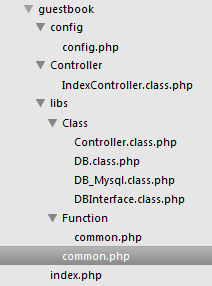

概述 多用户留言系统的API设计
现今的web开发大多采用前后端分离模式
后端设计好API接口 前端通过ajax等请求后端 返回json数据
然后前端用js操作返回的json数据 完成界面交互功能
本文将设计一个多用户留言系统的API
使用这个API 前端相应的ajax url请求 后端返回相应的json数据给到前端处理
此API的前端应用见： ajax处理多用户留言系统
此API的详细代码下载： 所有源代码下载
//整个程序流程
//ajax请求url示例: guest/index.php?m=Index&a=reg&username=xx
//m的值决定了引用并实例化Controller文件夹下的那个类 这里主要是m=Index 所以实例化IndexController.class.php
//a的值决定了调用上面被实例化的类的哪个方法 注册就是a=reg 然后调用IndexController类下的reg方法
//调用reg方法后 用$_REQUEST['username']等进行注册验证 对应的不同结果传给sendByAjax()不同的参数
//在Controller.class.php中调用sendByAjax() 最终输出json
文件目录结构
各文件说明 index.php 主文件 common.php 初始化文件 IndexController.class.php 具体实现注册登录验证及用户留言处理的类 Controller.class.php 完成数据返回功能 DB.class.php DB_mysql.class.php DBInterface.class.php 数据库操作的封装
index.php 主文件
<?php
define('IN_APP', TRUE);
define('APP_NAME', 'guestbook');
define('APP_PATH', dirname(__FILE__) . '/');
//进入common.php
require(APP_PATH . 'libs/common.php');
?>
common.php 初始化文件
<?php
//定义app基本常量
define('APP_VERSION', '1.0');
if (!defined('APP_PATH')) define('APP_PATH', substr(dirname(__FILE__), 0, -4));
define('CONFIG_APP', APP_PATH . 'config/'); //config目录
define('LIBS_PATH', APP_PATH . 'libs/'); //libs目录
define('CLASS_PATH', LIBS_PATH . 'Class/'); //class目录
define('FUNCTION_PATH', LIBS_PATH . 'Function/'); //function目录
define('CONTROLLER_PATH', APP_PATH . 'Controller/'); //控制器目录
//默认Module
define('DEFAULT_MODULE_NAME', 'Index');
//默认Action
define('DEFAULT_ACTION_NAME', 'index');
//header('Access-Control-Allow-Origin:*');//如果涉及跨域请求的话请加上这一句
header('Content-type:text/html; charset="utf-8"');
//版本检测
if ( version_compare(PHP_VERSION, '5.2.0', '<') ) {
exit('PHP 版本太低了！！');
}
//配置参数等
require(CONFIG_APP . 'config.php');
require(FUNCTION_PATH . 'common.php');
//整个程序流程
//ajax请求url示例: guest/index.php?m=Index&a=reg&username=xx
//m的值决定了引用并实例化Controller文件夹下的那个类 这里主要是m=Index 所以实例化IndexController.class.php
//a的值决定了调用上面被实例化的类的哪个方法 注册就是a=reg 然后调用IndexController类下的reg方法
//调用reg方法后 用$_REQUEST['username']等进行注册验证 对应的不同结果传给sendByAjax()不同的参数
//在Controller.class.php中调用sendByAjax() 最终输出json
class App {
//静态方法
static function run() {
//当前module
define('MODULE_NAME', isset($_REQUEST['m']) && !empty($_REQUEST['m']) ? $_REQUEST['m'] : DEFAULT_MODULE_NAME);
//当前action
define('ACTION_NAME', isset($_REQUEST['a']) && !empty($_REQUEST['a']) ? $_REQUEST['a'] : DEFAULT_ACTION_NAME);
require_once(CLASS_PATH . 'Controller.class.php');
//echo '当前模块：' . MODULE_NAME . '<br />' . '当前动作：' . ACTION_NAME;
$class_name = $class_file_name = ucfirst(MODULE_NAME) . 'Controller';
$class_file = CONTROLLER_PATH . $class_file_name . '.class.php';
//检测控制文件是否存在
if (!file_exists($class_file)) exit("控制器文件 $class_file 不存在!");
require_once($class_file);
//检测控制器类是否存在 实例化$_REQUEST['m'].Controller类
if (!class_exists($class_name)) exit("控制器类 $class_name 不存在!");
$Class = new $class_name;
//检测控制类方法是否存在
$class_method = ACTION_NAME;
if (!method_exists($Class, $class_method)) exit("控制器方法 $class_method 不存在!");
//调用控制器类方法 调用$_REQUEST['m'].Controller(IndexController)类下的reg等方法
call_user_func(array($Class, $class_method));
}
}
//调用App类下的run静态方法
App::run();
?>
IndexController.class.php 控制器类 实现具体操作
<?php
defined('IN_APP') or exit('Denied Access!');
//继承Controller类 Controller类定义了sendByAjax方法 初始化了数据库
//IndexController进行登录注册验证及留言处理等功能的具体实现
class IndexController extends Controller {
//url示例：guest/index.php?m=Index&a=index
public function index() {
echo '<p>欢迎</p>';
//$result = $this->db->get("select * from users", 1);
//dump($result);
}
/**
* @ interface 用户名验证
*/
//url示例：guest/index.php?m=Index&a=verifyUserName&username=xxx
public function verifyUserName() {
$username = trim(isset($_REQUEST['username']) ? $_REQUEST['username'] : '');
//根据url传过来的$_REQUEST['username'] ajax返回{"code":x, message:xxxx}等json数据
switch ($this->_verifyUserName($username)) {
case 0:
$this->sendByAjax(array('message'=>'恭喜你，该用户名可以注册！'));
break;
case 1:
$this->sendByAjax(array('code'=>1,'message'=>'用户名长度不能小于3个或大于16个字符！'));
break;
case 2:
$this->sendByAjax(array('code'=>2,'message'=>'对不起，该用户名已经被注册了！'));
break;
default:
break;
}
}
/**
* @ interface 用户注册
*/
//url示例：guest/index.php?m=Index&a=reg&username=xxx&password=xxx
public function reg() {
$username = trim(isset($_REQUEST['username']) ? $_REQUEST['username'] : '');
$password = trim(isset($_REQUEST['password']) ? $_REQUEST['password'] : '');
$avatar = trim(isset($_REQUEST['avatar']) && in_array($_REQUEST['avatar'], array(1,2,3,4,5,6,7,8,9)) ? intval($_REQUEST['avatar']) : 1);
//根据url传过来的$_REQUEST['username'] $_REQUEST['password'] ajax返回{"code":x, message:xxxx}等json数据
if ($this->_verifyUserName($username) !== 0 || strlen($password)<3 || strlen($password) > 20) {
$this->sendByAjax(array('code'=>1,'message'=>'注册失败！'));
}
$password = md5($password);
if (false === $this->db->query("INSERT INTO `users` (`username`, `password`, `avatar`) VALUES ('{$username}', '{$password}', {$avatar})")) {
$this->sendByAjax(array('code'=>1,'message'=>'注册失败！'));
} else {
$this->sendByAjax(array('message'=>'注册成功！'));
}
}
/**
* @ 用户登陆
*/
//url示例：guest/index.php?m=Index&a=login&username=xxx&password=xxx
public function login() {
$username = trim(isset($_REQUEST['username']) ? $_REQUEST['username'] : '');
$password = trim(isset($_REQUEST['password']) ? $_REQUEST['password'] : '');
if (isset($_COOKIE['uid'])) {
$this->sendByAjax(array('code'=>1,'message'=>'你已经登陆过了！'));
}
if ($rs = $this->db->get("SELECT * FROM `users` WHERE `username`='{$username}'")) {
if ($rs['password'] != md5($password)) {
$this->sendByAjax(array('code'=>1,'message'=>'登陆失败！'));
} else {
setcookie('uid', $rs['uid'], time() + 3600*60, '/');
setcookie('username', $rs['username'], time() + 3600*60, '/');
$this->sendByAjax(array('code'=>0,'message'=>'登陆成功！'));
}
} else {
$this->sendByAjax(array('code'=>1,'message'=>'登陆失败！'));
}
}
/**
* @ 用户退出
*/
//url示例：guest/index.php?m=Index&a=logout
public function logout() {
if (!isset($_COOKIE['uid'])) {
$this->sendByAjax(array('code'=>1,'message'=>'你还没有登陆！'));
} else {
setcookie('uid', 0, time() - 3600*60, '/');
setcookie('username', 0, time() - 3600*60, '/');
$this->sendByAjax(array('code'=>0,'message'=>'退出成功！'));
}
}
/**
* 用户留言保存
*/
//url示例：guest/index.php?m=Index&a=send
public function send() {
if (!isset($_COOKIE['uid'])) {
$this->sendByAjax(array('code'=>1,'message'=>'你还没有登陆！'));
} else {
$content = trim(isset($_POST['content']) ? $_POST['content'] : '');
if (empty($content)) {
$this->sendByAjax(array('code'=>1,'message'=>'留言内容不能为空！'));
}
$dateline = time();
$this->db->query("INSERT INTO `contents` (`uid`, `content`, `dateline`) VALUES ({$_COOKIE['uid']}, '{$content}', {$dateline})");
$returnData = array(
'cid' => $this->db->getInsertId(),
'uid' => $_COOKIE['uid'],
'username' => $_COOKIE['username'],
'content' => $content,
'dateline' => $dateline,
'support' => 0,
'oppose' => 0,
);
$this->sendByAjax(array('code'=>0,'message'=>'留言成功！','data'=>$returnData));
}
}
/**
* @ 顶
*/
//url示例：guest/index.php?m=Index&a=doSupport
public function doSupport() {
if (!isset($_COOKIE['uid'])) {
$this->sendByAjax(array('code'=>1,'message'=>'你还没有登陆！'));
} else {
$cid = isset($_REQUEST['cid']) ? intval($_REQUEST['cid']) : 0;
if (!$cid) $this->sendByAjax(array('code'=>1,'message'=>'无效留言cid！'));
$content = $this->db->get("SELECT cid FROM `contents` WHERE `cid`={$cid}");
if (!$content) $this->sendByAjax(array('code'=>1,'message'=>'不存在的留言cid！'));
$this->db->query("UPDATE `contents` SET `support`=support+1 WHERE `cid`={$cid}");
$this->sendByAjax(array('code'=>0,'message'=>'顶成功！'));
}
}
/**
* @ 踩
*/
//url示例：guest/index.php?m=Index&a=doOppose
public function doOppose() {
if (!isset($_COOKIE['uid'])) {
$this->sendByAjax(array('code'=>1,'message'=>'你还没有登陆！'));
} else {
$cid = isset($_REQUEST['cid']) ? intval($_REQUEST['cid']) : 0;
if (!$cid) $this->sendByAjax(array('code'=>1,'message'=>'无效留言cid！'));
$content = $this->db->get("SELECT cid FROM `contents` WHERE `cid`={$cid}");
if (!$content) $this->sendByAjax(array('code'=>1,'message'=>'不存在的留言cid！'));
$this->db->query("UPDATE `contents` SET `oppose`=oppose+1 WHERE `cid`={$cid}");
$this->sendByAjax(array('code'=>0,'message'=>'踩成功！'));
}
}
/**
* @ 获取留言列表
*/
//url示例：guest/index.php?m=Index&a=getList&page=xx&n=xx
public function getList() {
$page = isset($_REQUEST['page']) ? intval($_REQUEST['page']) : 1; //当前页数
$n = isset($_REQUEST['n']) ? intval($_REQUEST['n']) : 10; //每页显示条数
//获取总记录数
$result_count = $this->db->get("SELECT count('cid') as count FROM `contents`");
$count = $result_count['count'] ? (int) $result_count['count'] : 0;
if (!$count) {
$this->sendByAjax(array('code'=>1,'message'=>'还没有任何留言！'));
}
$pages = ceil($count / $n);
if ($page > $pages) {
$this->sendByAjax(array('code'=>2,'message'=>'没有数据了！'));
}
$start = ( $page - 1 ) * $n;
$result = $this->db->select("SELECT c.cid,c.uid,u.username,c.content,c.dateline,c.support,c.oppose
FROM `contents` as c, `users` as u WHERE u.uid=c.uid ORDER BY c.cid DESC LIMIT {$start},{$n}");
$data = array(
'count' => $count,
'pages' => $pages,
'page' => $page,
'n' => $n,
'list' => $result
);
$this->sendByAjax(array('code'=>0,'message'=>'','data'=>$data));
}
/**
* @ 用户名验证
*/
private function _verifyUserName($username='') {
if (strlen($username) < 3 || strlen($username) > 16) {
return 1;
}
$rs = $this->db->get("SELECT `username` FROM `users` WHERE `username`='{$username}'");
if ($rs) return 2;
return 0;
}
}
?>
Controller.class.php 所有控制器类的父类 数据库初始化 返回json输出
<?php
defined('IN_APP') or exit('Denied Aeecss!');
require(CLASS_PATH . 'DB.class.php');
class Controller {
protected $db = null;
private $ajaxData = array(
'code' => 0,
'message' => ''
);
//数据库操作初始化
public function __construct() {
$this->db = DB::factory('mysql');
}
//返回json输出
final protected function sendByAjax($data=array(), $end=true) {
if (is_array($data)) {
$return_data = array_merge($this->ajaxData, $data);
} else {
$return_data = $data;
}
echo json_encode($return_data);
$end && exit();
}
}
?>
DB.class.php DB_mysql.class.php DBInterface.class.php 数据库操作的封装
略 见详细代码下载